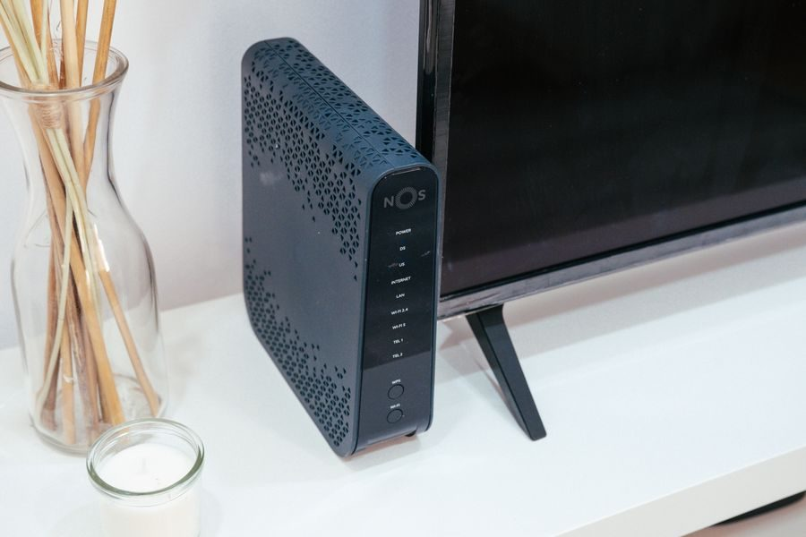

El mejor
Si el wifi falla en habitaciones concretas, esto lo arregla y un router más caro no. Es la compra correcta para pisos grandes o de dos plantas.

| Estándar | Wi-Fi 6, AX3000 |
|---|---|
| Velocidad | Hasta 2.402 Mbps en 5 GHz y 574 Mbps en 2,4 GHz |
| Cobertura | Hasta unos 230 m² por unidad |
| Puertos | 3 gigabit por unidad (1 WAN/LAN + 2 LAN) |
| Malla | Una sola red; el sistema reparte los aparatos solo |
Datos de la ficha oficial del fabricante (tp-link.com — Deco X50), consultada el 2026-09-02. No publicamos ningún dato que no podamos comprobar ahí.
No ponemos precios porque cambian cada día. Lo ves actualizado al entrar.
¿Comparándolo con otros? En la guía de los mejores routers y wifi en malla en calidad-precio están las cuatro opciones de la categoría: la mejor, dos de gama media y la mejor barata.